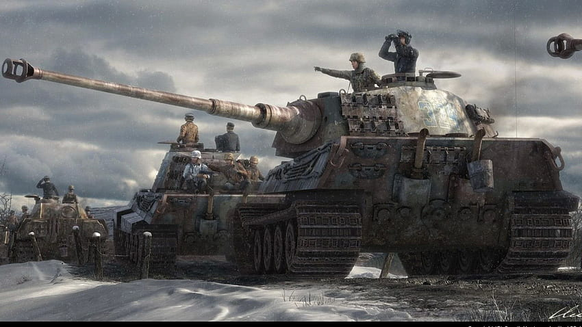

"Hearts of Iron IV" es un juego de estrategia ambientado en la Segunda Guerra Mundial, desarrollado por Paradox Development Studio. Transporta a los jugadores a uno de los momentos más tumultuosos de la historia, permitiéndoles tomar el control de una nación durante el período que abarca desde 1936 hasta 1948. Con una impresionante profundidad histórica, el juego ofrece una experiencia de juego inmersiva que combina elementos de diplomacia, política, economía y guerra. Los jugadores tienen la tarea de manejar aspectos cruciales como la producción de recursos, la investigación tecnológica y la planificación militar estratégica. Ya sea luchando como una potencia mundial o dirigiendo una nación menos conocida, cada decisión tomada puede tener un impacto significativo en el curso de la guerra y en el destino del mundo. Con una comunidad activa y un apoyo continuo de los desarrolladores, "Hearts of Iron IV" ofrece una experiencia de juego en constante evolución que sigue atrayendo a jugadores apasionados por la historia y la estrategia.
INTRODUCCIÓN AL HEARTS OF IRON 4
El juego presenta una enorme cantidad de opciones y rutas estratégicas, lo que permite a los jugadores explorar distintos escenarios y estrategias. Desde la diplomacia hasta la planificación de batallas a gran escala, cada aspecto está meticulosamente detallado. Los jugadores pueden experimentar la tensión y las decisiones cruciales que enfrentaron los líderes mundiales de la época, tomando el mando de ejércitos y flotas en campañas a nivel global. Además, la comunidad activa de modders ha expandido enormemente el juego, creando escenarios alternativos, naciones personalizadas y ajustes en la mecánica de juego. Todo esto contribuye a la riqueza y la durabilidad de "Hearts of Iron IV", convirtiéndolo en un título esencial para los amantes de la estrategia y la historia militar.
Acá nos podés dejar tu duda o sugerencia, si tenés alguna. Estamos trabajando constantemente para mejorar nuestro sitio y su funcionalidad, con lo cual nos gustaría que nos dieras un feedback sobre nuestra página.